鱼骨模中的热离子动理学效应与 Landau 阻尼
Thermal ion kinetic effects and Landau damping in fishbone modes
核心判断：在本文研究的近单位安全因子、弱反剪切托卡马克平衡中，只把快离子当作动理学粒子，可能把实际上受到热离子稳定作用的模态预测为不稳定。作者通过粒子—流体矩同步扩展 M3D-C1-K，并在声波基准和两台装置算例中展示热离子对频率与稳定边界的重要影响；但鱼骨模的稳定化不能仅凭这些对照就被定量地全部归因于 Landau 阻尼。
完整覆盖上传版本的正文第 1–7 节、16 幅图及图注；18 页均已检查。无附录、无编号表格、未发现额外实质性未编号插图。正式发表版仅用于元数据与版本差异核对，未并入本报告的图号与数值。
1. 来源、版本与阅读边界
分析依据为本地文件 Thermal ion kinetic effects and Landau damping in fishbone modes.pdf，首页标注 arXiv:2206.03648v1，提交日期 2022-06-08，页眉仍写“Under consideration for publication”。本报告所有“第几页”均指这个 PDF 的页码，恰与印刷页码相同。正文和致谢位于第 1–16 页，参考文献位于第 16–18 页；参考文献已作脉络识别，未逐篇追读。
正式发表信息：Journal of Plasma Physics 88(6), 905880610，2022-11-28 在线发表，DOI: 10.1017/S0022377822000952。版本不能互换：期刊网页将 BAE-like 改称 AE-like；相速度估计从 v1 的 、 与 ，改为 、 与 ；NSTX 的部分参数及非线性内容也有修改。这里不把新版结果拼接到旧版图解中。版本核对来源：期刊正式网页（访问：2026-09-24）。
材料清单：上传主文已获取并完整阅读；上传文件无附录；主文及核查的公开页面未发现本文专属补充 PDF 的明确入口；没有随论文获得代码快照、输入文件、原始粒子数据或数值输出。后文的数值均来自文中报告或图的定性趋势，未从曲线提取伪精确数据。没有执行原始物理仿真，也没有进行后续研究的新颖性检索。
2. 作者究竟解决什么问题
2.1 旧混合模型为何不能直接照搬到热离子
经典 kinetic–MHD 方法把热背景看成流体，只对快离子使用粒子方法。快离子压强可以很大，但其密度和动量占比通常较小，因此通过压强张量或电流反馈即可描述主要影响。热离子不同：它们承担主要质量密度和沿场动力学。若流体继续独立推进密度、平行速度，粒子又独立算同样的矩，两套离散结果会随时间分离。作者在顺序耦合的 M3D-C1 中观察到这种偏差可激发寄生模，并淹没目标信号。（第 1–2、5 页）
第二个问题是电子—离子之间的沿场恢复力。电子被当作流体、离子当作粒子后，离子的运动仍须感受到电子压强梯度对应的平行电场。理想 MHD 的电场表达本身没有提供这项力；直接漏掉它，连离子声波的正确恢复机制也无法保证。（第 2–4、6 页）
2.2 贡献与范围
- 耦合方法：压强反馈之外，用粒子矩直接同步密度与平行速度，保留垂直动量、磁场和电子热力学的流体求解。
- 验证链：先用离子声波检查沿场共振与阻尼，再比较纯 MHD、仅快离子动理学、全部离子动理学三个物理层级。
- 装置算例：在 DIII-D 和 NSTX 中比较频率及增长率随安全因子的变化，并做 NSTX 单个非线性算例，连接模态饱和、磁拓扑与快离子再分布。
作者明确说该思路类似 MEGA 的热离子方案；区别在于此处使用压强耦合，MEGA 使用电流耦合。因而新意应理解为这一耦合方案在 M3D-C1-K 中的实现及应用，而不是“首次把热离子放进混合模拟”。（第 2、5 页）
2.3 阅读所需的几个概念
是安全因子， 是其最小值； 和 分别是极向与环向模数。这里的“非共振”主要是指原平衡没有 的经典内部扭结共振面，不等于没有波粒共振。 衡量热压强相对磁压的大小；改变磁场可能同时改变安全因子与 。快离子被简称为 EP；fishbone-like 与 BAE-like 在 v1 中是分支描述，不应直接当作完成了连续谱定位的严格本征模鉴定。（第 7–11 页）
3. 模型拆解：谁推进什么，如何闭合
3.1 输入—推进—反馈—输出
输入由轴对称平衡、各物种密度与温度、快离子相空间分布、网格及输运系数组成。粒子轨道在场上插值获得力，推进导引中心和扰动权重；粒子沉积给出密度、平行速度和各向异性压强；流体侧用这些矩推进垂直运动、电子热力学和磁场；然后把更新后的场反馈给粒子。输出是线性频率、增长率及模态结构，或非线性能量分量、磁力线截面和粒子剖面。这是报告对第 2 节的流程重构，不是原文提供的完整伪代码。
3.2 保留的 MHD 方程
将第 3 页式 (2.1) 中两个离子压强项合写，得到同一方程：
是总离子质量密度， 是沿场单位矢量， 分别标记热离子和快离子； 来自粒子矩。这里保留了原式的 形式，不擅自把系数改成运动黏度。垂直惯性携带极化响应，因此不能因离子动理学已求解就把整个动量方程删除。作者把该方程解释为垂直电流中极化、漂移和磁化贡献的分解。（第 5 页）
以上是式 (2.2)–(2.4)， 为电阻率。电子压强采用式 (2.5) 的对流、压缩和各向异性热扩散，或先由式 (2.6) 推进温度再取 。后一写法把温度按能量单位理解；声波节显式写 ，复现时必须统一温度单位。
控制电子压缩响应， 控制热扩散。将电子与离子取共同平行速度，是忽略相关双流体修正后的近似，不是电子与离子永远严格同速的普遍结论。（第 3、5 页）
3.3 导引中心与电子压强电场
这是 v1 的式 (2.7)–(2.11)： 为导引中心位置， 为粒子平行速度， 为磁矩。这里的粒子电荷 与安全因子沿用同一字母，须按上下文区分。原文轨道式印成 ，随后引入 ，并在权重驱动式 (2.14)、(2.16) 中使用它；复现时应查代码中电场的具体分配，而不能忽略正文要求的电子压强平行力。
关键适用边界：附加平行电场没有同时进入式 (2.4) 的流体欧姆定律。作者以长波尺度下双流体项较小为理由，明确没有给出适用于离子惯性尺度的全自洽双流体耦合。它不能不加验证地用于动力学 Alfvén 波或 whistler 波。（第 5–6、16 页）
3.4 扰动权重把分布梯度转成波粒响应
式 (2.12) 中 是初始分布，，；下标 表示扰动驱动。线性计算取 ，非线性取 。式 (2.13)–(2.16) 分别给出位置、能量、俯仰角和平行速度变化的驱动项，作者也允许用总场与平衡场轨道差分获得它们。这说明 NSTX 分布平滑会影响的不只是图像外观，还包括真正驱动权重增长的梯度。（第 4 页）
公式核对提示：v1 式 (2.15) 写成下式左边所示形式；但由本页对能量和俯仰角的定义直接求导，得到右边第二式。两者能量项系数存在差异：
这是报告独立代数核对发现的待澄清排印或定义问题，不是已证实的代码错误；没有代码就无法判断程序是否使用原式，或采用了文中所说的轨道差分方案。它值得在复现前询问作者。
3.5 密度、平行速度和压强的矩同步
式 (2.17)–(2.19) 中， 为粒子形函数， 是物种电荷数，磁场修正来自导引中心矩计算中的磁场依赖。不能只用粒子权重而丢掉这些修正。把式 (2.20) 的两物种求和合写为：
这直接把两类离子的电荷加权平行流矩同步到流体侧，而不是再独立推进一套沿场动量方程。原文式 (2.20) 的平衡流减项按其写法保留；对具有净平行流的各向异性分布，需结合代码的权重和背景矩约定核验初始化，不能仅凭这段纸面公式重建所有沉积细节。（第 4–5 页）
式 (2.21)、(2.22) 为压强反馈；垂直压强多出一个磁场变化项。有限 Larmor 半径计算要求场插值与粒子沉积都做回旋轨道平均，不能只修改一端。文中说明了这一要求，但没有系统列出各算例的回旋平均实现与收敛参数。（第 5 页）
作者认为忽略漂移的小离子能量极限下，传统沿场流体方程可由粒子矩推得；问题在有限步长、先后求解时两者不再数值等价。同步消除了重复演化，但不自动构成离散总能量守恒的证明。半隐式方法允许较大步长是作者报告的方法优势，本篇未展示误差—耗时曲线。（第 5、15 页）
4. 离子声波：这套耦合能否产生正确阻尼
作者把系统限制为沿波矢的一维静电问题，保留电子压强演化而不使用垂直运动；电子等温，，有效电荷数取一，正弦平行速度扰动激发驻波。温度比控制离子热运动与波相速度的相对大小。纯 MHD 能得到声学振荡，加入热离子动力学后出现衰减。（第 6 页）
这是式 (3.1)、(3.2)。此处 是正的衰减率大小，与后面正值表示不稳定的增长率 约定不同。系数三来自一维离子压缩的热容比。作者将其用作温度比在约 0.1 到 1 之间的经验近似；不是严格求解完整等离子体色散函数的结果。图 2 实际只展示约 0.1 到 0.3 的扫描，验证范围应以图中算例为准。
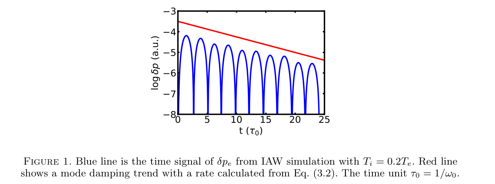
来源：用户上传 PDF，PDF 第 7 页（与印刷页码一致）；原编号 Figure 1。点击查看原分辨率。
读图：横轴为以 归一化的时间，纵轴为压强扰动的对数信号，单位标为 a.u.；温度比 。蓝线是模拟，红线是式 (3.2) 给出的衰减趋势参考。蓝线一连串尖谷对应振荡过零附近，而不是周期性发生“无限大阻尼”。
结果与边界：包络下降斜率与理论趋势接近，支持模型产生了预期的动力学衰减。红线不是逐点拟合，截距无须与蓝线峰值重合。图中没有误差条、拟合区间或粒子数扫描，因此不能从视觉重合推出高精度阻尼率认证。（第 6–7 页）
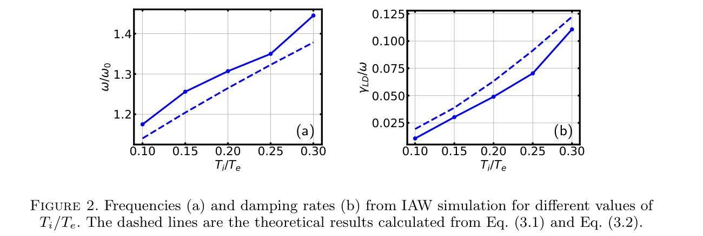
来源：用户上传 PDF，PDF 第 7 页（与印刷页码一致）；原编号 Figure 2。点击查看原分辨率。
两面板共用横轴 。(a) 纵轴为 ，(b) 为 ；实线点为模拟，虚线为经验公式。温度比上升时，两者都上升。频率的模拟值整体略高于虚线，阻尼比整体略低于虚线，故“吻合”应理解为趋势和量级吻合，不是零偏差。
这比单一时序更有说服力，说明声波恢复力和速度分布响应随参数有合理变化。但没有展示温度比接近一的验证；也没有把经验近似误差、离散误差、噪声与拟合误差分开。声波基准成功支持后续鱼骨计算的可信性，却不直接测出了鱼骨模中的 Landau 阻尼功率。（第 6–7 页）
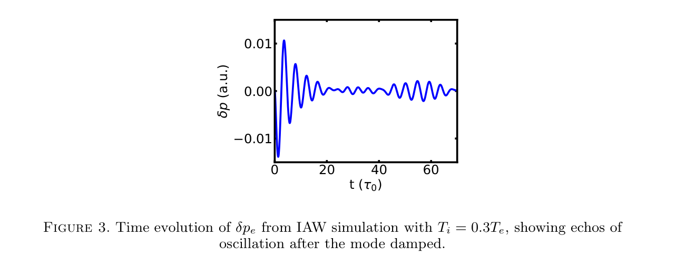
来源：用户上传 PDF，PDF 第 7 页（与印刷页码一致）；原编号 Figure 3。点击查看原分辨率。
横轴为归一化时间，纵轴为电子压强扰动，温度比 。早期振幅显著下降，后期出现小幅振荡包络再增强。作者称之为 Landau 阻尼后的 echo，并用相混合仍保留粒子记忆来解释。
谨慎解读：图只显示一个时间信号。它没有区分受控等离子体回声、非线性粒子俘获、有限粒子噪声和离散速度空间回归，也未给出二次激励协议。报告将“回声”为作者解释，“后期信号再现”为直接观测。需要改变初始振幅、粒子数和时间步并检查相空间结构，才能明确机制。（第 6–7 页）
5. DIII-D：热离子改变的不只是增长率
平衡来自放电 #125476 的 ，EFIT 使用 MSE 约束；模拟不含环向流。原平衡 ，位于 ，核心有轻微反剪切。热、快离子均为氘，热离子取 Maxwell 分布，，。快离子采用能量慢化、俯仰角各向同性分布。（第 7–8 页）
式 (4.1) 描述分布形状；文中未展开速度空间归一化因子，实际初始化必须保证积分得到目标密度。快离子压强占总压强的 16%，在各磁面保持相同。二维网格有 5495 个三角形单元，环向采用谱表示；粒子标记总数为 ，热离子与快离子各半。（第 8 页）
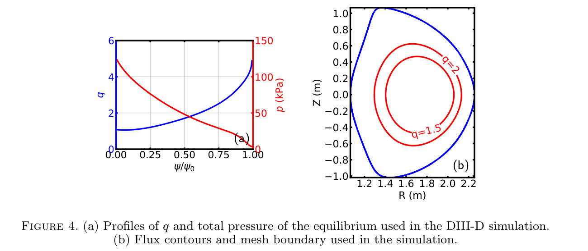
来源：用户上传 PDF，PDF 第 8 页（与印刷页码一致）；原编号 Figure 4。点击查看原分辨率。
(a) 横轴为归一化磁通，左轴蓝线为安全因子，右轴红线为总压强，单位 kPa；核心接近单位安全因子，压强从核心向外下降。(b) 为 – 截面，坐标单位 m，蓝线标计算边界，红色磁面标示 和 。
图提供“弱反剪切核心＋有限压强＋有理磁面”的几何背景，后面的模态结构必须放在该平衡下理解。仅凭曲线形状不能推广到任意托卡马克或所有反剪切平衡。Bateman 扫描通过给 加常数改变环向场，其中 ，保持压强与环向电流；这满足平衡方程，但同时改变 ，是后面必须控制的混杂因素。（第 8 页）
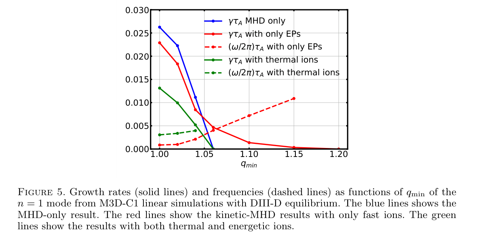
来源：用户上传 PDF，PDF 第 9 页（与印刷页码一致）；原编号 Figure 5。点击查看原分辨率。
横轴 ，实线为 ，虚线为 ； 是图中采用的 Alfvén 时间归一化，不能直接把纵轴值当作 kHz。蓝色：纯 MHD；红色：只有快离子为动理学；绿色：快离子和热离子均为动理学。
纯 MHD 在约 附近变为稳定。仅加入快离子时，小安全因子区的增长率下降，但更高安全因子区仍有弱不稳定、频率较高的分支。加入热离子后，低频鱼骨分支频率上移，增长率降低，作者报告高安全因子分支被稳定。（第 8–9、11 页）
不能推出：绿色增长率靠近零不等于测出了稳定模的负增长率；图中缺失的虚线也不代表物理频率为零。该图切换的是整套热离子动力学，不能单独给出 Landau 阻尼对稳定化的百分比。作者把高频分支称为 BAE-like，缺少连续谱／本征函数分类证据时应保留“-like”。
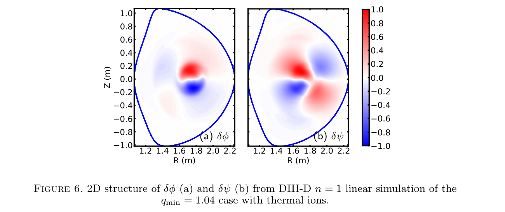
来源：用户上传 PDF，PDF 第 10 页（与印刷页码一致）；原编号 Figure 6。点击查看原分辨率。
本图及图 7–9 对应 、含热离子的线性算例，横纵轴为 ，单位 m；色标为归一化有符号扰动，不能跨物理量比较绝对幅值。(a) 速度流函数 在核心以 为主，外围含 ；(b) 磁通扰动 以 结构为主。
它说明单个 模态并不只有一个极向谐波。多谐波结构也是单一“有效平行波数”估计不够稳健的原因。原文的 是速度流函数，不能未经定义就当作静电势。（第 9–10 页）
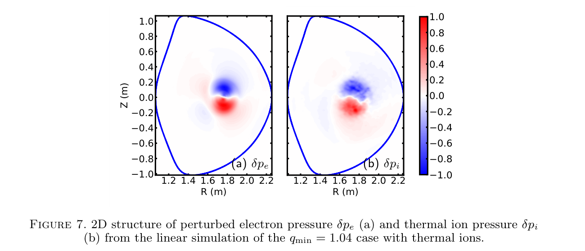
来源：用户上传 PDF，PDF 第 10 页（与印刷页码一致）；原编号 Figure 7。点击查看原分辨率。
(a) 电子压强 ，(b) 热离子压强 ，二者核心正负瓣的位置与整体形状相似，粒子计算一侧可见更细碎的结构。作者据此说准中性条件得到满足。
更严格的判断是：该图支持两个热力学响应的空间一致性，但压强相似并不是密度准中性的充分证明，因为温度扰动也进入压强。准中性更直接来自式 (2.19) 的构造，应另画电荷密度残差随时间的范数。图中归一化还隐藏了绝对幅值差异。（第 9–10 页）
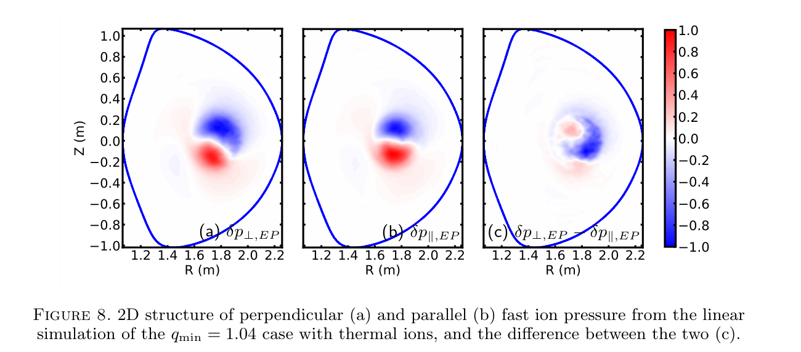
来源：用户上传 PDF，PDF 第 10 页（与印刷页码一致）；原编号 Figure 8。点击查看原分辨率。
(a) 为 ，(b) 为 ，(c) 是二者之差。前两幅具有相近的大尺度正负瓣，作差后剩余结构更局域于低场侧，即截面较大 的一侧。
作者将该差值称为非绝热响应，并联系被俘获粒子的共振作用。图说明取向相关的压强响应不能被单个标量压强完整替代；但该差值并不是速度空间能量交换率，也不能只凭其位置确认哪一类粒子净驱动模态。需要轨道分类与共振功率诊断补充。（第 9–10 页）
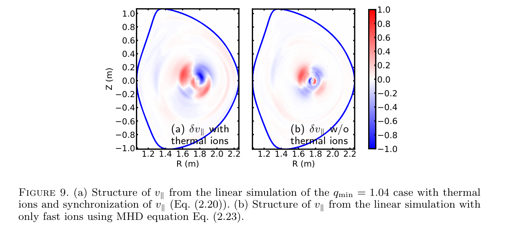
来源：用户上传 PDF，PDF 第 11 页（与印刷页码一致）；原编号 Figure 9。点击查看原分辨率。
(a) 为全部离子动理学并通过式 (2.20) 同步的平行速度；(b) 为仅快离子动理学、通过沿场流体方程得到的结果。二者均呈主要 结构，说明新耦合能产生与流体侧相近的沿场运动形态。
这不是严格“同一物理、只换数值算法”的消融，因为是否包含热离子动力学也一起变化。归一化图只能比较结构，不能认证绝对速度、相位误差或时间稳定性。要直接验证同步优势，应保持物理模型一致，再比较有无同步时的矩残差与寄生模增长。（第 5、9、11 页）
5.1 共振量级估计：有启发，但不是阻尼率推导
式 (4.2) 后，v1 用 代表混合的极向谐波，报告 时 ， 时为 ，并定义 。这些是 v1 原文的相速度量级，不能和正式版的新估计混用。（第 9 页）
Landau 共振取决于沿场速度与相速度接近，以及分布在共振处的梯度。把两个整数谐波替换为非整数平均值，会掩盖实际的径向局域波数、各谐波权重与符号；尤其近有理面时更敏感。这里应把估计看成“热离子可能参与共振”的物理动机，而非精确阻尼大小或符号的计算。
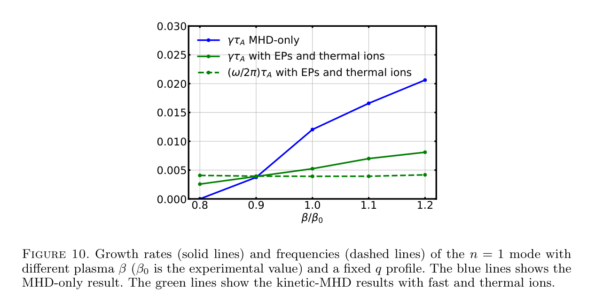
来源：用户上传 PDF，PDF 第 11 页（与印刷页码一致）；原编号 Figure 10。点击查看原分辨率。
横轴为 ，参考值为实验平衡；固定 剖面，取 。蓝实线为纯 MHD 增长率，绿实线为全离子动理学增长率，绿虚线为频率，纵轴归一化与图 5 相同。纯 MHD 增长率随压强显著增大；加入离子动理学后增长率依赖较弱，而频率变化不大。
这补充说明“非共振扭结”仍对压强驱动敏感，也暴露图 5 的磁场扫描并非只改变安全因子。作者通过同时改变电子、离子温度及快离子能量来缩放压强，因此该扫描也改变了共振分布尺度；它并非只调一个抽象 MHD 压强参数。图中没有只含快离子的中间模型，不能完整拆分每个物种贡献。（第 11 页）
5.2 与实验频率的比较需要降格表述
作者报告模拟 ，实验室系模频率约 ，环向转动约 ，并称在等离子体系中一致。（第 11–12 页）按最简单、同向且同位置的 Doppler 修正，得到：
其幅值约为 ，并不等于 。频率符号、实际旋转剖面、模态局域位置和非线性 chirping 可能影响比较，但文中没有给出足够信息消除差异。因此报告认为这是低频量级上的支持，不能称作严格定量验证。也不能据此反向断言模拟错误。
6. NSTX：分布更真实，控制变量更清楚
平衡采用放电 #134020 的 安全因子剖面，密度温度来自 TRANSP，在 7199 单元网格上求解 Grad–Shafranov 方程；忽略高电荷杂质，离子均取氘。核心电子密度为 ，电子与离子温度约 ，核心快离子压强比例为 17.3%。NSTX 轴上 为 50.8%，DIII-D 对照为 12.4%；这是轴上量，不是体平均或归一化 。采用依赖局域温度的 Spitzer 电阻率和较大的平行热传导。（第 12 页）
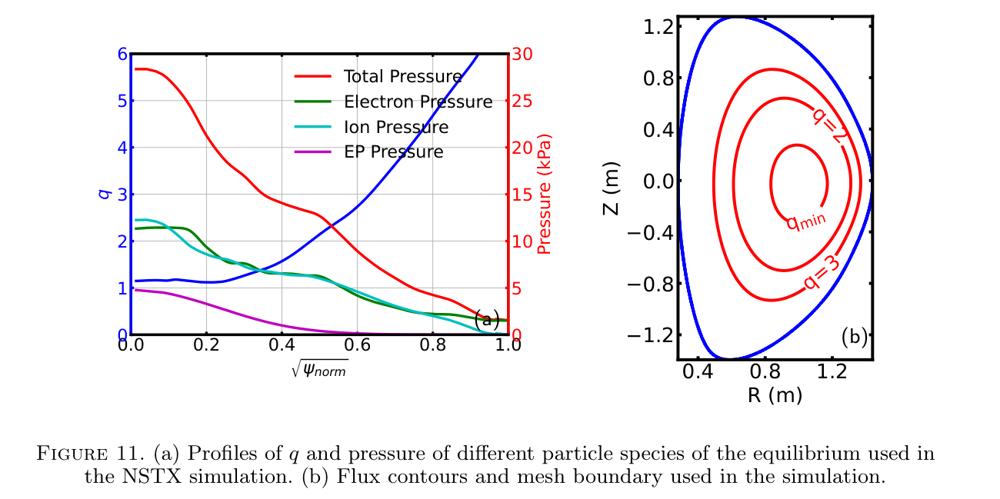
来源：用户上传 PDF，PDF 第 12 页（与印刷页码一致）；原编号 Figure 11。点击查看原分辨率。
(a) 横轴为原图标注的归一化径向量 ，左轴蓝线为安全因子，右轴为 kPa：红色总压强、绿色电子压强、青色离子压强、紫色 EP 压强。(b) 为以 m 为单位的截面，标出最小安全因子位置及 磁面。
本图把驱动的径向分布与反剪切区域关联起来；NSTX 的强压强环境也解释了为什么它的稳定阈值不能直接照搬 DIII-D。不过两装置同时改变了几何、压强、分布等多个因素，不能把两图间差别全部归因于轴上 。（第 12–13 页）
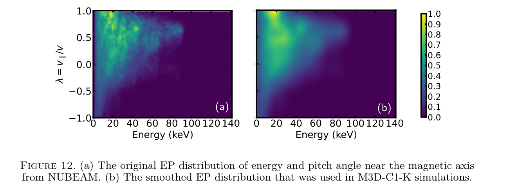
来源：用户上传 PDF，PDF 第 13 页（与印刷页码一致）；原编号 Figure 12。点击查看原分辨率。
两面板横轴为能量，单位 keV，纵轴为 ，颜色是归一化分布强度。(a) 为磁轴附近原始 NUBEAM 结果；(b) 为用于初始化和权重演化的平滑分布。低于约 的快离子多为同向通过粒子，较高能量处在俯仰参数约 0.4 附近有集中分布。（第 12–13 页）
平滑减少 Monte Carlo 噪声，令分布梯度可以稳定计算；保留下来的整体各向异性区别于 DIII-D 的各向同性假设。但权重方程依赖的恰是这些梯度，平滑也可能改变物理驱动。文中没有给出核宽扫描、守恒矩误差或共振区梯度敏感性，因此不能只凭两图“看起来相似”认证其无偏。接近零的俯仰角区域可提示俘获粒子，但严格俘获边界还依赖位置与磁场几何。
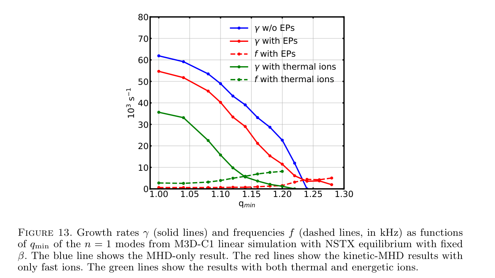
来源：用户上传 PDF，PDF 第 13 页（与印刷页码一致）；原编号 Figure 13。点击查看原分辨率。
与 DIII-D 不同，这里固定环向场、改变电流以匹配新的安全因子剖面，从而近似保持 。横轴 ；实线表示增长率，单位 ，虚线表示普通频率，图注指定单位 kHz。两类量虽然共用数字刻度，却不能把虚线当角频率，比较时应记住 。颜色对应三种模型，与图 5 一致。
全部离子动力学明显降低增长率并提高鱼骨分支频率。v1 报告仅快离子时约在 出现更高频的 BAE-like 主导分支，含热离子时在 的高频分支被稳定。接近阈值的曲线没有误差条，阈值不应被理解为可普适预测的精确常数。（第 13–14 页）
作者指出 NSTX 束离子的俘获部分较少，而各向同性热离子提供较多俘获粒子，可参与鱼骨驱动；因此“热离子存在驱动贡献”和“热离子使净增长率下降”可以同时成立。这进一步说明全热离子响应不只是一个外加标量阻尼项。
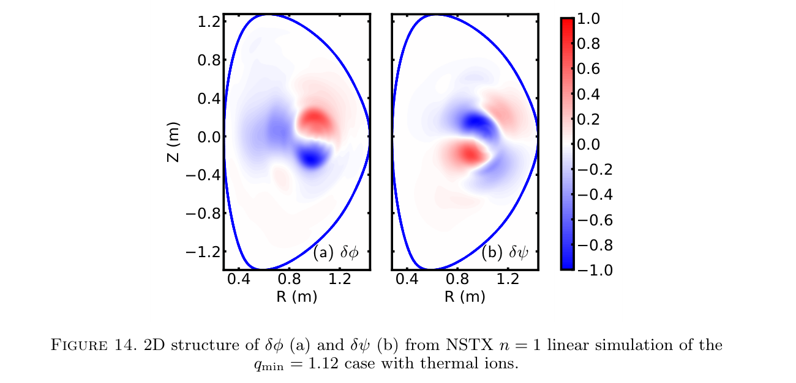
来源：用户上传 PDF，PDF 第 14 页（与印刷页码一致）；原编号 Figure 14。点击查看原分辨率。
v1 算例取 ，(a) 为 ，(b) 为 ；坐标为 m，色标为归一化扰动。两面板都显示核心局域的正负瓣和延展结构，但流动与磁场的空间权重不同。
它为下一节非线性算例提供线性起点。图本身不展示磁岛，也不能把线性磁通色图等同于磁力线拓扑；拓扑判断要依赖图 16 的 Poincaré 截面。原文把扣除旋转后的实验频率低于 与本算例联系起来，同时提醒饱和后的向下 chirping 可能降低频率；没有直接叠加实验时频谱。（第 14 页）
7. 非线性：磁结构明显变化，径向平均输运却有限
v1 非线性模拟沿用 NSTX 的平衡和分布，取 。使用八个环向平面，以 Hermite 有限元连接，截面网格沿用线性计算；总计 粒子标记。作者聚焦主模与轴对称分量之间的耦合。计算运行于 NERSC Perlmutter 的八个节点，每节点 64 个 AMD CPU 核与四块 NVIDIA A100，合计 512 核、32 GPU。GPU 用于矩阵元计算和粒子推进，CPU 用于 PETSc 矩阵求解及粒子矩沉积。没有给出实际运行时长、步数、耗电或扩展效率。（第 14 页）
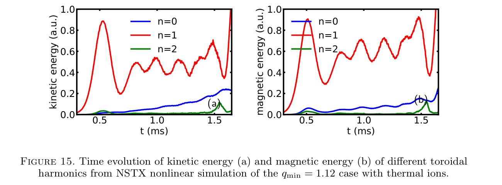
来源：用户上传 PDF，PDF 第 15 页（与印刷页码一致）；原编号 Figure 15。点击查看原分辨率。
(a) 动能，(b) 磁能；横轴为 ms，纵轴为任意归一化能量。蓝、红、绿分别为 。主模在约 达到第一次饱和，作者报告此时峰值 。随后主模磁能仍维持明显幅度并振荡，轴对称分量增长，二阶谐波较小。（第 14–15 页）
它支持持久磁结构变化与非线性谐波耦合，而不是一次短暂扰动后完全恢复。左右两图各用 a.u.，不能由红线高度计算动能与磁能的绝对比例，也不能用它证明总能量守恒。八个环向平面够用是作者对其关注模态的判断，本文未展示更高环向分辨率对饱和幅值和拓扑的收敛测试。
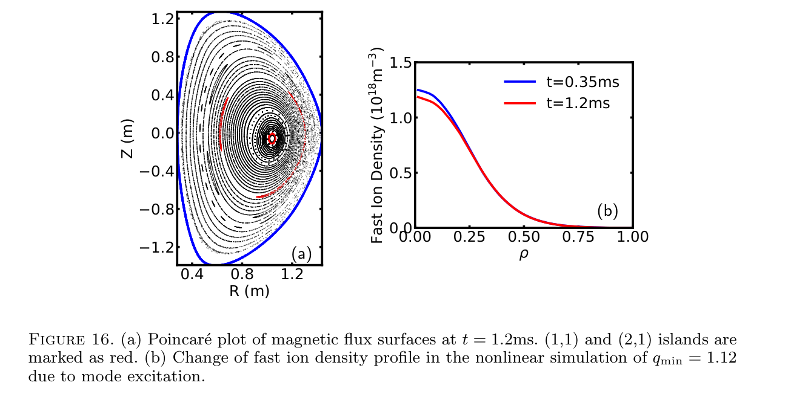
来源：用户上传 PDF，PDF 第 16 页（与印刷页码一致）；原编号 Figure 16。点击查看原分辨率。
(a) 为 的 Poincaré 截面，坐标 m；红色标出作者识别的 和 磁岛。磁轴发生位移，扰动范围与反剪切区域联系紧密。原平衡没有单位安全因子磁面，并不禁止非线性后形成新的岛状拓扑。(b) 横轴为原图的径向坐标 ，纵轴为快离子密度，单位 ；蓝线取 ，红线取 ，文中没有在图注中进一步定义这里的 ，不宜擅自认定其具体磁通归一化。
作者报告磁轴附近快离子密度下降约 5%，剖面并未完全变平。这个百分比是局部密度相对变化，不是总粒子损失率，也不是快离子能量损失比例。磁面平均会隐藏共振线附近更明显的相空间重排；参考剖面取自模拟中的早期时刻，而非直接显示初始时刻。（第 15–16 页）
作者用有限驱动梯度必须克服 Landau 阻尼来解释残余梯度，物理上有启发性，但该图没有提供有／无阻尼的匹配非线性对照，因此不是对饱和机制的唯一证明。模拟中的磁岛与实验所报扭结—撕裂结构相似，也不等于已定量复现完整新经典撕裂模及其输运协同。
8. 证据强度：哪些结论稳，哪些仍需补证
| 论断 | 实际支持 | 合理判断及缺口 |
|---|---|---|
| 全离子耦合能产生声波 Landau 衰减 | 第 6–7 页，图 1–2 的时序和参数扫描 | 方法级支持较强；误差与收敛量化不足，经验近似并非严格色散求根。 |
| 热离子改变鱼骨模稳定边界 | 图 5、13 的三模型对照，两套装置条件 | 在已报告扫描内有直接数值支持；不构成所有平衡下普遍稳定化的定理。 |
| 稳定化主要来自 Landau 阻尼 | 声波验证、相速度量级、增长率降低 | 物理解释可信但未完全隔离。需粒子—场功率与分物种、分轨道共振诊断。 |
| 同步避免寄生模 | 第 5 页的算法动机与作者经验，图 9 的结构对照 | 未给同物理条件下残差、寄生模谱、步长扫描；不能把定性结构图当完整数值稳定证明。 |
| 声波后期信号是回声 | 图 3 单一时序 | 未区分非线性俘获、数值回归与噪声；应称作者解释。 |
| 小径向再分布说明快离子影响小 | 图 16 的磁面平均密度 | 只能说本次算例的轴附近平均密度下降有限；共振相空间输运、总损失、功率输运仍未确定。 |
作者明确承认的边界
长波模型忽略部分双流体项；平行压强电场尚未同时进入流体欧姆定律；磁面平均密度无法展示共振线附近的分布变化；非线性模拟聚焦有限环向谐波。未来计划是改进求解器并在流体与粒子方程中自洽加入双流体电场。（第 5–6、14–16 页）
本报告额外提出的复核点
第一，v1 公式 (2.15) 的系数和式 (2.20) 的背景矩约定需要代码层核对。第二，快离子平滑、粒子噪声、有限时间拟合对边际增长率可能影响显著，但未报告其量化结果。第三，模态分支识别应结合连续谱或独立本征值计算；“频率变大”本身不是 BAE 的充分判据。第四，实验频率验证没有给出旋转剖面、误差范围和统一的频率符号约定。第五，半隐式大步长的速度优势没有在本篇给出成本—精度数据。这些是证据缺口，不是已经证实的实现缺陷。
9. 哪些做法值得借鉴，怎样迁移
以下建议不假设读者拥有某个特定课题或代码。其价值在于实验设计和数值耦合原则，而不是照搬论文中的阈值。
| 借鉴对象 | 前提与迁移步骤 | 成本与失败条件 |
|---|---|---|
| 让同一物理矩具有明确的更新来源 | 适合粒子—流体混合模型。先列出所有共享变量，区分独立演化量与由粒子重建量；统一粒子沉积与场插值；记录准中性和动量残差；再与冗余演化方案在同一物理模型下对照。 | 需改耦合接口和诊断，成本中高。噪声直接进入流体变量、背景矩处理错误或插值不一致时可能失效。同步本身不代替守恒检查。 |
| 先验证局部机制，再进入真实几何 | 用声波检查沿场恢复力、频率和衰减；再用简单平衡；最后使用实验重建。为各阶段定义独立的通过标准。 | 前期成本低至中等，能减少大计算误判。声波通过不保证环面俘获粒子和漂移共振正确，仍需相应基准。 |
| 控制安全因子与压强扫描的混杂 | 每个扫描点重新核验平衡，记录磁场、电流、压强和粒子分布的实际变化；分别做固定安全因子的压强扫描与近似固定压强比的安全因子扫描。 | 需额外平衡求解与多个线性点。即便固定全局参数，局部剪切、连续谱和分布梯度也可能改变，不能只看参数标签。 |
| 把分布平滑当作物理输入的一部分 | 保存原始与平滑分布；检查密度、能量、俯仰矩及共振区域梯度；扫描平滑核宽，使用同一分布初始化和演化。 | 数据处理成本中等、重复仿真成本较高。平滑抹除窄共振结构或产生边界偏差时失败，不能以图像平滑程度作为唯一标准。 |
| 把磁拓扑与粒子相空间输运并列诊断 | 同时输出磁力线截面、径向密度、分能量／俯仰粒子分布和边界损失；用相同时间窗口比较。 | 增加粒子跟踪和存储开销。仅依赖磁面平均可能漏掉局域共振输运，磁场扰动大也不必然对应大粒子损失。 |
10. 后续研究：可检验的问题与最小实验
作者原有计划：在粒子与流体侧一致纳入双流体电场，改进矩阵求解器，研究较短波长问题。（v1 第 16 页）下面是本报告提出的研究设计，未检索其是否已被后续工作完成，不声称新颖性。建议的百分比阈值是预先设定的验收目标，不是论文数据。
方向一 · 先把边际稳定性的不确定度算出来
动机与假设：图 5、13 的稳定边界缺少误差条；假设热离子的净稳定化在数值误差收敛后仍明显存在。最小实验：选阈值两侧各一个线性平衡，在相同物理输入下对比仅快离子与全离子模型；至少改变两档网格、三档粒子数、两档时间步，并用三个随机种子估计噪声。可先逐项扫描再复核最精细组合，避免所有参数的全笛卡尔积。
基线、指标与判据：用最精细结果作数值参考，记录频率、增长率、拟合窗敏感性、准中性残差与能量预算。若热离子效应大于跨设置不确定度的两倍，且远离零的增长率变化小于预设 5%，则支持稳健性；若增长率符号随分辨率或种子翻转，则否定当前“已确定阈值”的说法，而不是否定所有热离子物理。资源／风险：中等到较高的线性任务成本，接近边际时需要更长时间窗口，粒子噪声可能使计算量明显增加。
方向二 · 直接量化热离子是在驱动还是吸收能量
动机与假设：全热离子模型同时改变非共振响应、俘获粒子驱动和 Landau 阻尼。假设在图 5、13 失稳被抑制的算例中，热离子在共振速度附近表现出净吸收，而净驱动主要来自其他自由能。
最小实验：选择一对明显受稳定化影响的线性算例，加入与离散模型一致的粒子—场功率诊断，按热／快离子、通过／俘获轨道、平行速度与半径分箱。先在 IAW 基准确认功率符号和相混合特征，再用于鱼骨模。若要开关某一力项，只能作为补充对照，并检查其是否破坏能量一致性。
基线、指标与判据：同一平衡的纯 MHD 和仅快离子模型作基线；要求粒子功率、场能增长和数值耗散闭合到预设容差（例如主要功率的 5%），且热离子共振区净吸收在时间平均后稳健。如果能量差主要由电阻、数值耗散或模态结构重排解释，就否定“Landau 阻尼主导”的假设。资源／风险：需源码与诊断开发，成本中高；相位、背景平衡功率扣除及噪声可导致错误的能量流判断。
方向三 · 评估快离子平滑是否改变稳定阈值
动机与假设：图 12 的高斯平滑改变权重方程所需梯度。假设合理核宽范围内，频率和增长率的变化小于热离子稳定化效应。最小实验：对同一 NUBEAM 数据设置三档核宽，保持密度和能量矩可比，并采用一个带显式矩约束的平滑结果作对照；先跑远离边际的点，再跑临界附近一点。
指标与判据：比较密度、压强、俯仰矩误差，共振区梯度，线性频率与增长率。可预设低阶矩误差小于 1%、远离边际的动力学量变化小于 5%；若热离子稳定化的符号随合理核宽改变，则该输入处理必须作为物理不确定度报告。资源／风险：中等数据工作加若干线性计算；原始分布采样不足时，不同平滑方法之间的差异未必能够收敛。
方向四 · 解释“小密度变化”背后的非线性再分布
动机与假设：图 16 的约 5% 核心密度变化可能掩盖较大的共振子群输运。最小实验：围绕 v1 的 取邻近平衡，至少复核一个更高环向分辨率算例；保存标记轨迹及能量—俯仰—径向联合分布，比较饱和前后状态并单独统计边界损失。
基线、指标与判据：以原八平面模拟和无模扰动粒子轨道作基线，记录饱和幅值、磁岛宽度、频率 chirping、核心密度、总粒子数与共振子群位移。若共振子群变化显著超过无模数值扩散并随粒子数收敛，而径向总密度仍只小幅改变，则支持“平均掩盖局域输运”；否则否定这一特定解释。资源／风险：高成本三维 HPC 与轨迹存储；平衡误差、谱分辨率、轨道分类和损失边界可能比单次运行噪声更重要。
较长期 · 自洽双流体扩展
顺着作者计划，先在线性均匀等离子体中比较包含和不包含一致 Hall／电子压强电场时的色散关系，再逐步减小尺度；不要直接在复杂鱼骨算例中加入所有新项。通过标准应是长波极限回到现有模型、短波与适用理论或独立代码一致，同时离散能量预算闭合。该方向需要求解器开发与专门验证，成本高，风险在于刚性增加和粒子—流体能量交换不一致，而非单纯多写几项方程。
11. 复现所需材料与交付覆盖
| 项目 | 已知 | 仍需获得／核对 |
|---|---|---|
| 模型和算法 | 第 2 节耦合方程、导引中心、扰动权重；有限元、PIC 和半隐式框架 | 代码版本、离散时间顺序、权重归一化、背景矩、守恒诊断；式 (2.15) 待澄清。 |
| DIII-D 输入 | 放电与时刻、单元数、粒子数、快离子分布形状和能量尺度 | EFIT 文件、剖面数据、边界条件、时间步、黏性电阻及热输运设置、谱与粒子加载细节。 |
| NSTX 输入 | 放电与时刻、TRANSP／NUBEAM 来源、7199 单元网格、核心参数 | 原始相空间网格和数据、核宽、归一化与插值、重建后的扫描平衡、具体输运系数。 |
| 线性指标 | 频率与增长率曲线，归一化模态图 | 原始时序、拟合区间、误差条、稳定模衰减提取方法、Alfvén 时间的具体数值与定义。 |
| 非线性成本与结果 | 八平面、1600 万标记、八节点配置；能量曲线与一个拓扑／剖面对比 | 时间步、运行耗时、初始扰动、能量预算、环向收敛、频谱、粒子丢失与三维原始输出。 |
全文脉络：第 1 节提出问题；第 2 节构造耦合；第 3 节声波检验；第 4 节 DIII-D；第 5 节 NSTX；第 6 节非线性；第 7 节总结。参考文献中，Park 等的多层模型对应传统压强耦合，Sato–Todo 对应 MEGA 热离子方案，Liu 等 2022 对应 M3D-C1-K 实现基础，Brennan 等对应 DIII-D 对照，Yang 等对应 NSTX 实验背景。这是引用角色说明，不声称重新验证这些外部论文。
图像覆盖：逐页核对共 16 幅编号图，所有多面板完整保留，全部已嵌入并逐面板解释；无表格、无附录图、无已获取补充图。figure-manifest.json 记录每张图的源页、裁剪坐标、资源路径和锚点。所有图来自用户上传版本，使用整页渲染后裁剪，不以 PDF 位图对象数量代替图清单。
离线交付：公式由 LaTeX 预渲染为 HTML/MathML，保留每式源码；样式和字体随 assets 文件夹提供，无需联网脚本。原图可点击放大，窄屏公式与表格可横向滚动。外部来源链接需联网访问。源 PDF 未打包，报告通过文件名、页码与公式／图号定位。
验收状态：已完成原 PDF 逐页预览、16 幅最终裁剪图的视觉核对、LaTeX 编译与资源／锚点静态检查。内置浏览器安全策略拒绝访问本地 HTML；因此未完成桌面、窄屏及打印布局的浏览器视觉验收，不将整份交付标为已通过全部验收。
覆盖限制：本报告内容完整覆盖的是用户上传的 arXiv v1，而非正式发表版或未获取的代码与数据。正式版有实质修改；做研究引用或定量复现前，应另行以正式版及作者输入文件为准。这里提供的后续实验均为建议，未执行。